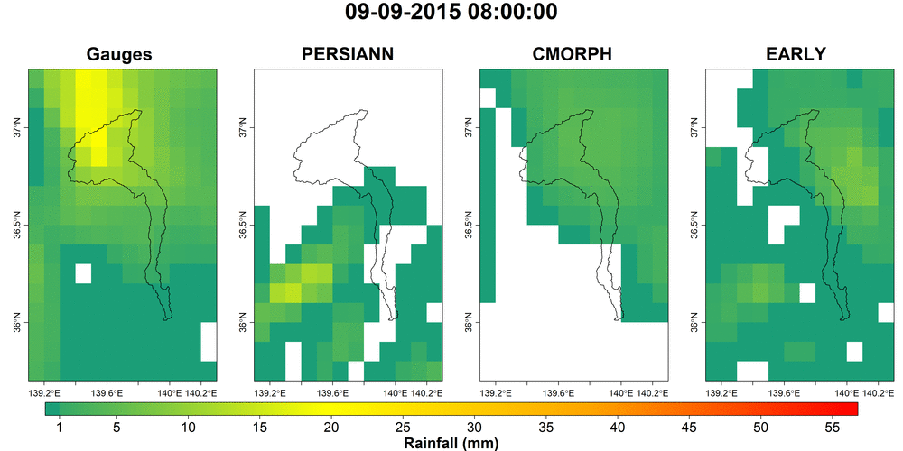

Remote Sensing
Remote Sensing provides us a great opportunity to better understand our planet and obtain information for locations all over the globe. It is in fact an efficient tool for supporting decision making pre-/during-/post- disaster, especially for locations with poor observational networks.
My initial experience in this sector was on near-real-time satellite precipitation products, as part of my M.Sc. thesis in Flood Risk Management, conducted in ICHARM, Japan and IHE Delft, the Netherlands. During that period, I used a range of satellite precipitation products and bias-correction and merging techniques for improving the accuracy of the provided information. This work led to 2 peer-reviewed publications and several presentations.
Recently, I started researching on the usefulness of remote sensing products for the agricultural sector. The aim is to use the latest available satellite data to improve the vulnerability assessment and increase the preparedness of the stakeholders before a flood event, as well as, provide more accurate information during the event and the post-disaster period. This was a group idea developed during the Copernicus Barcelona Hackathon and gave the 2nd place to our team.

Selected publications
Mastrantonas, N., Bhattacharya, B., Shibuo, Y., Rasmy, M., Espinoza-DáValos, G., Solomatine, D., 2019. Evaluating the benefits of merging Near Real-Time Satellite Precipitation Products: A Case Study in the Kinu Basin Region, Japan. J. Hydrometeorol. https://doi.org/10.1175/JHM-D-18-0190.1
Khairul, I.M., Mastrantonas, N., Rasmy, M., Koike, T., Takeuchi, K., 2018. Inter-Comparison of Gauge-Corrected Global Satellite Rainfall Estimates and Their Applicability for Effective Water Resource Management in a Transboundary River Basin: The Case of the Meghna River Basin. Remote Sens. 10, 828. https://doi.org/10.3390/rs10060828
Mastrantonas, N., Bhattacharya, B., Shibuo, Y., Rasmy, M., Espinoza-DáValos, G., Solomatine, D., Evaluation and Merging of Near Real-Time Satellite Precipitation Products: A Case Study in Kinu Basin, Japan, BHS Peter Wolf Symposium 2018 [link]